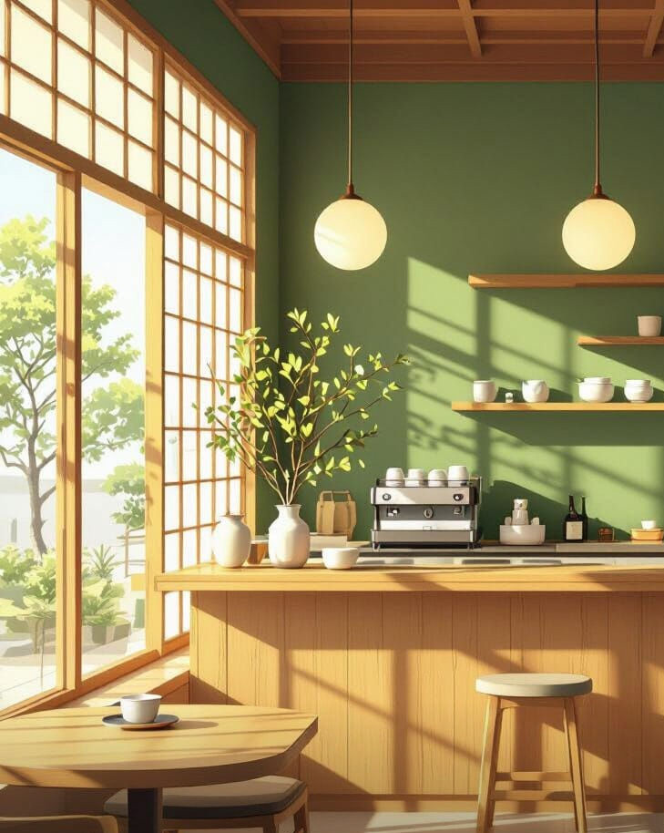

お茶について
お茶は、千年以上の歴史を持つ、心と体を整える飲み物です。
古くは「薬」として人々に親しまれ、今もなお、日々の暮らしに安らぎをもたらしています。
一煎ごとに香りが広がり、心がほどけていく、
それは自然の恵みと人の心が織りなす、ひとつの調和。
私たちは、その伝統とやさしさを大切に、
皆さまの健康と癒しの時間をお届けします。
-

緑茶は発酵していないお茶です。
-

烏龍茶
烏龍茶（ウーロン茶）は、半発酵のお茶です。
香りが豊かで、苦みが少なく、飲みやすいのが特徴です。
脂肪の吸収を抑える効果があると言われています。
カフェインが含まれており、気分をリフレッシュするのにも役立ちます。
健康や美容に良いお茶として、広く親しまれています。 -

紅茶
紅茶は完全に発酵したお茶です。
香りが豊かで、コクのある味が特徴です。
体を温め、リラックス効果があると言われています。 -

白茶
白茶は発酵が少ないお茶です。
やさしい香りと、淡い味わいが特徴です。
抗酸化作用があり、美容に良いと言われています。 -
黄茶
黄茶は製造工程が特別なお茶です。
苦みが少なく、まろやかな味が特徴です。
消化を助け、体にやさしいお茶とされています。 -

黒茶
黒茶は後発酵のお茶です。
深い香りと、コクのある味が特徴です。
腸内環境を整え、健康に良いと言われています。

- 店舗名
- Tea Plus
- 所在地
- 〒556-0011 大阪市浪速区難波中１丁目６−２
- アクセス
- 南海本線・御堂筋線「難波駅」
- 電話番号
- 06-4397-2450
- 予約
- 8:30～22:30
- 営業時間
- 9:00～22:00
- 定休日
- 月曜日
- 席数
- 10席